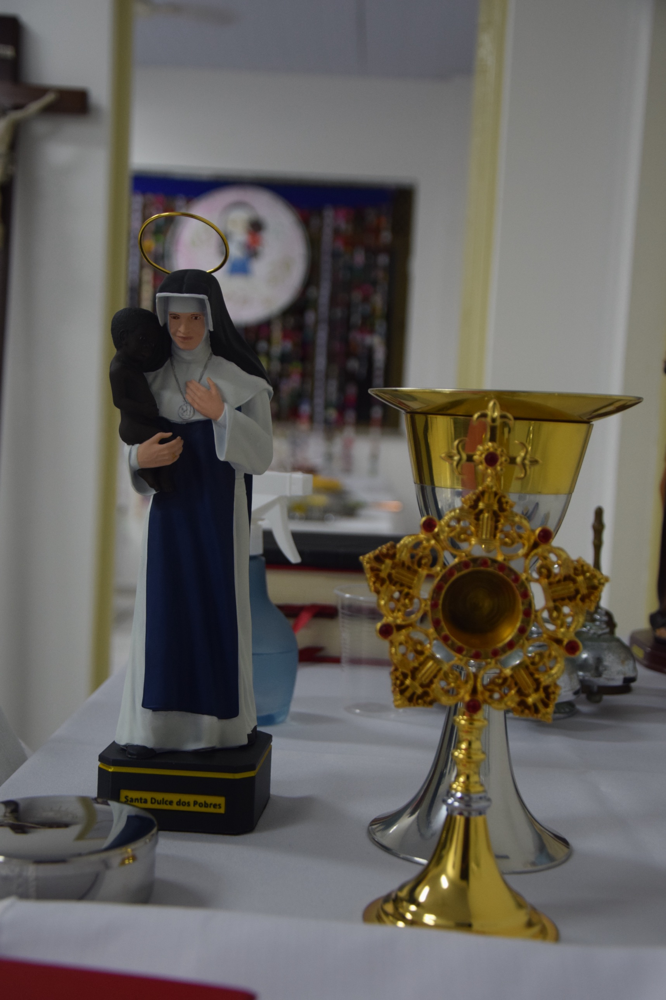

CAMPANHA DO DÍZIMO
Seu dízimo se
transforma em vida
e missão.
transforma em vida
e missão.
Cada contribuição sustenta a liturgia, a formação e a caridade da nossa comunidade — com o seu dízimo, fazemos muito mais.
